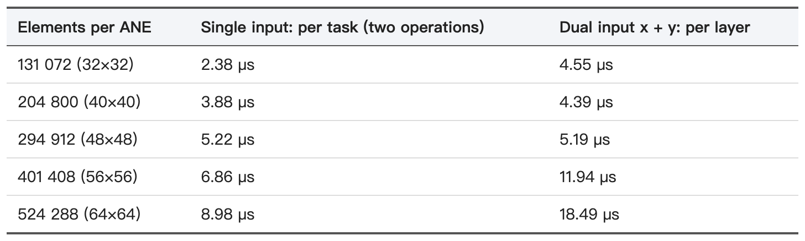
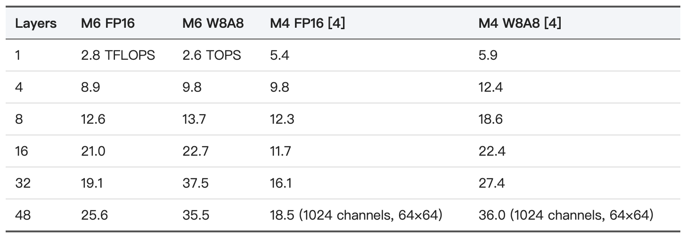
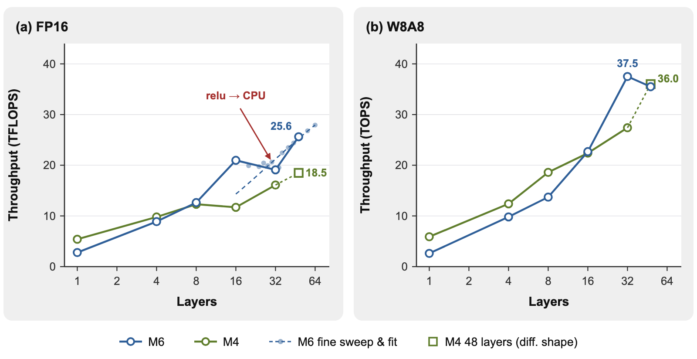
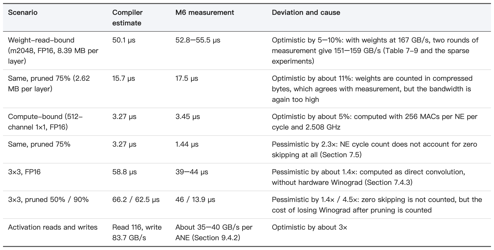
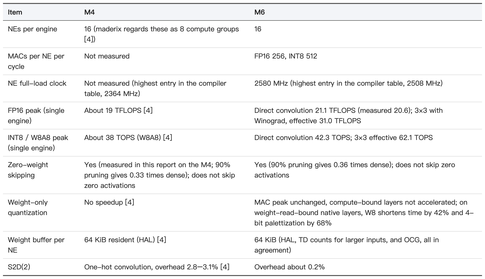

This post is chapter 7 of the report "Microarchitecture of the Apple M6 Neural Engine: An Empirical Study Based on Compiled Artifacts, Execution Traces, and Power Measurements", reproduced unchanged. Full report: web; data and tools: GitHub. Section, figure and table numbers follow the report.
7.6 Planar Engine
7.6.1 Throughput
To measure the throughput of the PE, we constructed chains that contain only elementwise operations, and we confirmed that all data remain in L2. In the compiled artifact, the TDs other than the first layer carry no DMA address packets, and at run time the DRAM reads and writes of the two ANEs amount only to a noise floor of about 0.5 GB/s. Because these models are all split across the two ANEs, we measured the task duration of each ANE with kdebug. Table 7-11 gives the results for 256 channels and five spatial sizes (tools: pe_ktrace.sh, pe_kt.py; data: pe_kt/, pe_kt_fit.txt) 〔kdebug〕. The compiler merges single-input operations (abs, multiplication by −1, and relu) into one task per two operations.
Table 7-11. Task duration of PE operations (per ANE)

The task durations of single-input operations are closely linear in the number of elements (maximum residual 0.17 µs). Each task has a fixed part of about 0.35 µs. By the number of elements processed per task (each task contains two operations), the throughput is about 61 G elements/s per ANE. Each element reads 2 bytes and writes 2 bytes, which is equivalent to about 243 GB/s of L2 read and write traffic. Addition and multiplication take the same time, and alternating between them also takes the same time, which indicates that the throughput is not limited by the operation type.
Dual-input operations do not exhibit linear behavior. From 32×32 to 48×48, each layer stays at 4.4–5.2 µs. At 56×56 and 64×64 it jumps to 11.9 µs and 18.5 µs, respectively, and in this range the marginal throughput is much lower than that of single-input operations. A field of the HAL parameter table (offset 0x5f6, read by ZinMirInterleaveInitializer::IsDualInputsPEWithSingleDMAEngine) is 1 on H16 through H19. Judging by its name, it indicates that dual-input PE operations have only one DMA engine. We conjecture that, when the data reside in L2, the two inputs are likewise read in sequence by one engine. This is consistent with the observation that the unit cost per element of dual-input operations is higher. From 56×56 onward, each of the three tensors on an ANE amounts to about 0.75–1 MiB, and the total exceeds the 2 MiB of L2 used by the compiler, so additional constraints may also apply 〔HAL, kdebug, inferred〕.
7.6.2 Clock and Width
The clock of the PE is independent of the NE clock, and it is very likely located in the shared cluster common to the two ANEs. Section 11.3 gives the complete argument. Only the frequency estimate is used here. The ratio of the PE clock at full load to its lowest state is 2.63. Starting from the low end of the compiler's L2 frequency table, 684–720 MHz, the full-load PE clock is estimated at about 1.8–1.9 GHz (Section 11.3.2) 〔inferred〕.
At this frequency, the PE processes about 61 G ÷ 1.8–1.9 GHz ≈ 32 FP16 elements per cycle. That is, it reads 64 bytes and writes 64 bytes per cycle, which is consistent with the PE work unit of 64 in the HAL (in bytes) 〔inferred〕. It should be emphasized that this width depends on a clock derived from the frequency range of the compiler's L2 table, and it is not a directly measured result.
In the programs tested in Section 6.6.1, PE operations and multiply-accumulate operations in different TDs show no overlap. This report cannot determine whether the hardware can run the two in parallel across different TDs. The activation function fused after a convolution is implemented by the lookup-table mode in the NE configuration, as a 33-point lookup table with linear interpolation (Section 8.5.1). Its numerical behavior is discussed in Chapter 8.
7.7 Throughput and Network Depth
maderix [4] gives data on M4 throughput as a function of chain depth. For comparison, we used a similar shape on the M6 (512 channels, 32×32, distinct weights per layer) and adopted the same convention as maderix, namely overall throughput including the fixed overhead of each call. This shape is split across two ANEs on the M6. The results are shown in Table 7-12 (data: chains_run2.txt, b6_q8_run.txt) 〔timing〕.
Table 7-12. Throughput versus chain depth (including the fixed overhead per call)

Within 8 layers, the M6 is not faster than the M4, because the total time is dominated by the fixed overhead per call. For FP16, the M6 is clearly faster starting at 16 layers. W8A8 is clearly faster only at 32 layers (37.5 versus 27.4 TOPS), and at 16 layers the two are essentially the same. At 48 layers, both M4 data points are for 1024 channels and 64×64, a shape different from that on the M6. The FP16 comparison of 25.6 versus 18.5 TFLOPS and the W8A8 comparison of 35.5 versus 36.0 TOPS can therefore only serve as a reference. After subtracting the fixed overhead, the FP16 time for 36 layers and above can be described by a straight line of about 13.1 µs per layer, equivalent to about 40.9 TFLOPS (see below). The measurement at 16 layers deviates from this line because of differing host-side overhead, so the marginal throughput should not be obtained by subtracting the 16-layer and 48-layer points. Figure 7-4 shows the variation of throughput with chain depth on the M6 and the M4.

Figure 7-4. Overall throughput (including the fixed overhead per call) of the M6 and M4 as a function of chain depth: (a) FP16, (b) W8A8. The M6 uses 1×1 convolution chains of 512 channels and 32×32, with distinct weights per layer. The M4 data are taken from maderix [4], whose 48-layer point has 1024 channels and 64×64. The scattered points in (a) are a fine sweep over 16–64 layers. The dashed line is the throughput corresponding to a straight-line fit of per-call time over 36 or more layers (data: chains_run2.txt, b6_q8_run.txt, b6x_sweep.txt).
Table 7-12 contains an anomaly: the FP16 throughput at 32 layers is lower than at 16 layers. After re-measuring with finer steps over 16–64 layers, we found that the per-call time for 36 layers and above can be described by a single straight line. The fit gives about 390 µs + 13.12 µs per layer, a least-squares fit using, for each layer count, the smaller of the two rounds' values. When the task-duration column is used instead, the fit gives about 376 µs + 13.21 µs per layer. Measurement points below 36 layers deviate from this line (data: b6x_sweep.txt, b6_kt/, effA_kt/) 〔timing, kdebug〕. The deviation has two independent causes. Models with fewer layers are faster than the line predicts, while the 32- and 34-layer models are slower than the line predicts.
For the former, the 16-layer model is 184 µs faster than the line predicts. Firmware timestamps show that the ANE task duration stays on the line. The entire difference comes from host-side overhead after task completion, which rises gradually from about 166 µs at 16 layers to about 355 µs at 28 or more layers. This is the host CPU idle-depth effect described in Section 6.5.
For the latter, the 32- and 34-layer models are about 100 µs slower than the line predicts. The execution plans in the E5 cache of Core ML (Section 5.2) show that, of the 28 models in this experiment, only the FP16 32- and 34-layer models have a plan that includes a CPU segment. Its content is "type conversion → last-layer relu → type conversion," meaning that Core ML placed the final relu on the CPU, with the execution plan AneInference → Cast → CpuInference → Cast (data: b6_sample_top.txt, b6_pcpu.txt) 〔timing, inferred〕. Compiling the complete 32-layer model directly with ANECCompile causes no problem, so this partition was made by the Core ML segmenter and not by the ANE compiler rejecting the operation. According to the cost rule of Section 5.2, the estimated time of the final relu is the same on the ANE and on the CPU. Placing it on the ANE costs 0.125 ms for the graph output, and placing it on the CPU costs 0.125 ms for one switch, so the total cost of the two choices is equal, which is a tie. In a tie, on which side the operation falls is not determined. This phenomenon may be related to that tie. However, the equality of the two sides is derived from data for a 64-channel relu on the M4, and the tie alone does not explain why this partition appears only at 32 and 34 layers and only for FP16 〔inferred〕. The 32-layer W8 and W8A8 models are not affected by this effect.
7.8 Comparison of the Compiler Performance Model with Measurements
The performance-model CSV described in Section 7.1 lists, for each TD, the bytes of weight reads, activation reads, and activation writebacks, the NE cycle count, and the estimated time. We used the models from the sparse experiments and the field-tracing experiments to re-export these CSVs on the M4 with h18g as the target (data: perfcsv2/), and we reverse-engineered the compiler's timing formula TD by TD 〔compiler〕. The compute part is estimated as NE cycles divided by 2.508 GHz, the highest state of the compiler's frequency table; the measured full-load clock is 2.58 GHz (Chapter 11). Weight reads overlap with computation, and the larger of the two is taken. Weights are assumed to be read at 167.4 GB/s, and every weight-read-bound TD back-calculates to exactly this value, which is close to the theoretical DRAM bandwidth of 170.5 GB/s. Activation reads and writebacks are assumed at 116.0 GB/s and 83.7 GB/s, respectively, and TDs that merely move data, such as elementwise addition, pooling, and softmax, back-calculate to exactly these values. For a TD with only one work unit, activation reads and writes are added directly to the computation. For a large TD with many work units, activation reads and writes are almost entirely hidden behind the computation. The exact rule for cases in between has not been decomposed by us 〔compiler〕. Table 7-13 compares this estimate with the M6 measurements.
Table 7-13. Per-layer estimate of the compiler performance model versus M6 measurements

Table 7-13 shows that the compiler's performance model is quite accurate for compute-bound dense convolutions that do not use Winograd, with an error of about 5%. It is optimistic by about 10% for weight reads and about 3× for activation DMA. It does not consider at all the two acceleration features of the M6, namely hardware Winograd and sparse zero skipping, and it therefore systematically overestimates the time of 3×3 convolutions and pruned layers 〔compiler, kdebug〕. These deviations directly affect the compiler's decisions. Dual-ANE splitting and global refinement (Section 5.8.3) both rely on this estimate. The splitting decisions for 3×3 layers and pruned layers are based on times overestimated by 1.4–4.5×, and the optimistic estimate of activation DMA causes the compiler to underestimate the cost of copy-and-merge after splitting 〔inferred〕. It should further be noted that exe_cycles in the TD header of the HWX and the CSV estimate are not the same quantity. The per-layer exe_cycles of a pruned 1×1 convolution is about 1 (3 when dense), whereas the CSV estimate remains 3.27 µs. The algorithm that produces exe_cycles has not been determined in this report.
7.9 Comparison with the M4
Table 7-14 summarizes the comparison of the compute arrays of the M4 and the M6.
Table 7-14. Compute arrays of the M4 and M6

The HAL parameter tables of the M4 and the M6 take the same values in the fields related to the MAC array and the weight buffer (Section 5.4). The compute arrays of the two generations should therefore be structurally identical. The increase in the single-engine peak of the M6 should derive mainly from its higher NE clock, while the doubling of the overall peak comes from the second engine 〔HAL, inferred〕.
7.10 Summary
This chapter analyzed the peak computational capability of the ANE compute array and the conditions for achieving it. Each ANE has 16 NE cores, and each NE completes 256 FP16 or 512 INT8 MACs per cycle. At the full-load clock of 2.58 GHz, the direct-convolution peak of a single ANE is 21.1 TFLOPS for FP16 and 42.3 TOPS for INT8. The 256 FP16 MACs consist of 1 input channel and 256 "output channel × pixel" combinations per cycle, with pixels counted in blocks of at least 32 pixels and 8 columns, so layers with fewer than 32 pixels per work unit or a width of fewer than 8 columns waste the array. Whether the peak can be approached depends on shape and precision. The resident-weight limit of 64 KiB per NE determines the output-channel grouping, and the time steps up when the output-channel count just exceeds 256. Kernel widths of 9–15 are rewritten into a form that doubles the weight amount, and widths of 16 and above are placed on the CPU. The 3×3 and 1×3 convolutions are executed by hardware Winograd, with effective throughput reaching about 1.47× the direct-convolution peak. W8A8 is about 1.8–2× FP16 on compute-dense convolutions, and exactly 2× for 3×3 convolutions. Compressed weights are read in compressed form, and layers limited by weight reads have their time shortened in proportion to byte count. The compute array skips zero weights stored in sparse format but does not skip zero activations. The PE is in an independent clock domain, and single-input operations run at about 61 G elements/s. The compiler's performance model is accurate to about 5% for dense, compute-bound layers, but it does not account for Winograd or zero skipping.
The single-engine peaks in this chapter form the baseline against which Chapter 10 evaluates dual-engine scaling and against which Chapter 14 states its expectations. The organization of the 256 MACs has been determined: 1 input channel per cycle, with 256 "output channel × pixel" combinations in parallel and pixels counted in blocks of at least 32 pixels and 8 columns (Section 7.3.4). Still undetermined are whether the higher MAC tier in the performance model can be reached, which stage is the bottleneck of rewritten kernels, and why the speedup from pruning falls below the non-zero fraction (Section 16.2). The deployment recommendations derived from the conclusions of this chapter are concentrated in Section 15.2 (Table 15-1).
References
[4] maderix. Inside the M4 Apple Neural Engine, Part 4: The Complete Machine. https://maderix.github.io/articles/inside-the-m4-ane-part-4/, 2026.